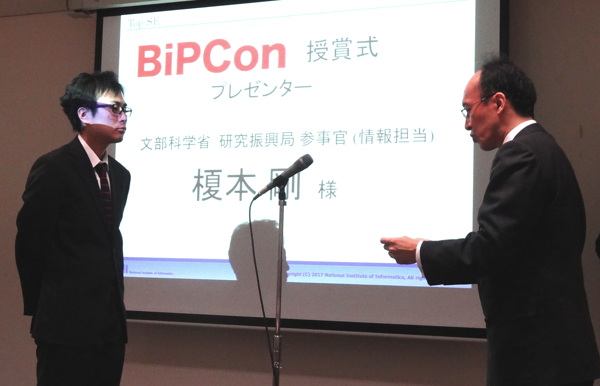
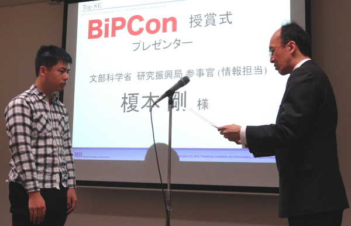
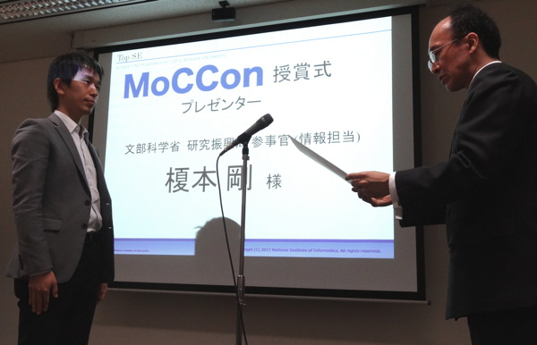
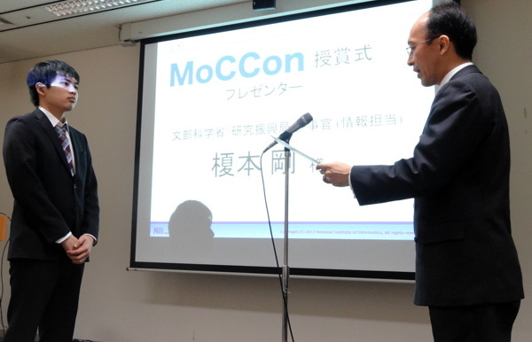

トップエスイーは，ソフトウェアエンジニアリングの技術・理論・ツールを使いこなすIT技術者(スーパーアーキテクト)を育成する社会人向けの教育プログラムです．10年以上に渡り300名を超える社会人エンジニアを修了者として送り出しました．また，トップエスイーはエンジニアの自己研鑽を支援する活動を行っております．その一環として，国内の社会人・学生を対象とした，先端的なソフトウェアエンジニアリング技術を競う「トップエスイーコンテスト」を開催します．社会におけるソフトウェアの重要性がますます高まる中，高度なIT技術者の育成につながることを願っております．
トップエスイーコンテスト2017は，BiPCon，MoCConという2つのオンラインコンテストで構成されます．どちらも学生，社会人を問わず参加可能です．2017年3月24日には，国立情報学研究所で行われたトップエスイーシンポジウムにて入賞者の表彰式を行いました．
ビッグデータ処理プログラミング技術を駆使して，与えられた生のビッグデータセットから期待される統計情報を抽出する能力を競うコンテストです．
BiPCon応募者より提出された解析結果について厳正な審査を行い，優勝及び学生奨励賞を以下のように決定しました．入賞おめでとうございます．BiPConにご応募いただいた皆様に御礼申し上げます．
| 優勝 | 石川和典（株式会社東芝インダストリアルＩＣＴソリューション社ＩｏＴテクノロジーセンター）
 |
|---|---|
| 学生奨励賞 | 庭野聡（東京大学大学院情報理工学系研究科創造情報学専攻）
 |
2017年3月22日発表
モデル検査を用いて詳細設計書の不具合解析を行い，結果を的確に第三者に報告する能力を競うコンテストです．
MoCCon応募者より提出されたレポートについて厳正な審査を行い，優勝及び学生奨励賞を以下のように決定しました．入賞おめでとうございます．MoCConにご応募いただいた皆様に御礼申し上げます．
| 優勝 | 徳本晋（株式会社富士通研究所システム技術研究所）
 |
|---|---|
| 学生奨励賞 | 長島悠太（大阪大学大学院情報科学研究科）
 |
2017年3月18日発表
ビッグデータ処理プログラミング技術を駆使して，与えられた生のビッグデータセットから期待される統計情報を抽出する能力を競うコンテストです．
| 主催 |
大学共同利用機関法人情報・システム研究機構 国立情報学研究所 トップエスイー |
|---|---|
| 後援 | 文部科学省, enPit, NPO法人トップエスイー教育センター |
| 審査委員 | 坂本一憲(国立情報学研究所) |
| BiPConで 競う能力 | ビッグデータを高速に処理する能力を競います．さらに分解すると，高速な分散処理プログラムを記述する能力，分散処理プログラムの実行環境を構築・運用する能力が要求されます．すなわち，ビッグデータを分散処理するプログラムの開発能力と運用能力の両方が求められます． |
| 参加資格 | 日本在住の個人．入賞した場合に，2017年3月24日に国立情報学研究所(東京都千代田区)で行われる表彰式に参加可能であること．(※入賞者にはトップエスイーより旅費の補助あり．) |
| 競技内容 | 実ビッグデータセットに対して，指定された結果を抽出する分散処理プログラムを作成し，得られた結果をWeb上で回答します．データセットはコンテスト当日の一週間前にオンライン配布を行います．コンテスト事務局の方で，参加者の皆様へHadoopおよびHiveの実行クラスタ1セットをご用意いたしますが，共用のクラスタになるため十分なパフォーマンスが得られない恐れがございます．そこで，参加者の皆様には，各自で分析環境をご用意いただくことを推奨いたします． |
| 審査方法 | 出題に対し，正しい回答を入力した時間の速さによって評価いたします． |
| 重要日程 |
|
| 各賞 |
|
モデル検査を用いて詳細設計書の不具合解析を行い， 結果を的確に第三者に報告する能力を競うコンテストです．
| 主催 |
大学共同利用機関法人情報・システム研究機構 国立情報学研究所 トップエスイー |
|---|---|
| 後援 | 文部科学省, enPit, NPO法人トップエスイー教育センター |
| 審査委員 |
|
| MoCConで 競う能力 | 詳細設計書から検証のためのモデリングを行い，既知の不具合（設計ミス）の原因をモデル検査を用いて解析し，その結果を第三者に説明する能力を競います． |
| 参加資格 | 日本在住の個人またはグループ．入賞した場合に，2017年3月24日に国立情報学研究所(東京都千代田区)で行われる表彰式に参加可能であること．(※入賞者にはトップエスイーより規定人数分の旅費の補助あり．) |
| 競技内容 | 自然言語で記述された要求仕様と，そこから作成した状態遷移表，および観測された不具合が与えられます．これらから，検査のためのモデルを構築し，モデル検査によって不具合の原因を解析してください．検査のためにおこなった仮定や前提，検査結果をまとめて「モデル検査報告書」(規定枚数以内，様式自由) を作成し，提出していただきます．なお，モデル検査ツールは，SMV(NuSMVなど)，SPIN，UPPAALのいずれかを使用してください． |
| 審査方法 | モデル検査の知識のない第三者でも理解できる，的確な報告書となっているかを総合的に審査します． |
| 重要日程 |
|
| 各賞 |
|
お申し込みに先立って，TopSE Communityのアカウントを作成してください．ただし，現在，TopSE受講生の方，実践プログラミングセミナーを受講された方はアカウントの作成は不要です．